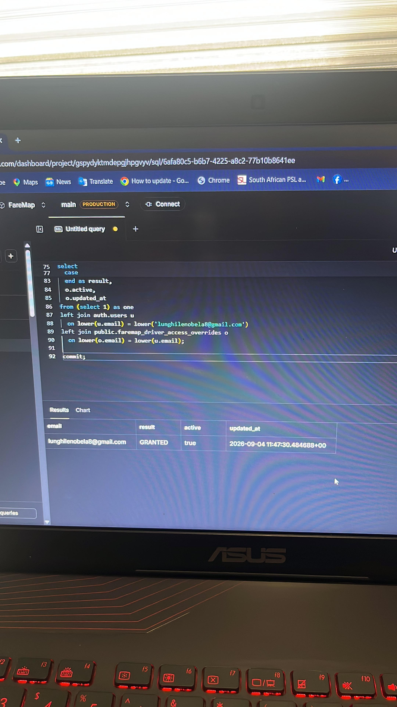

01 / E-COMMERCE
Denz iPhones
A product-focused iPhone storefront with browsing, stock presentation and a clear checkout journey.
● LIVE
Design • Development • Digital experiences
I design and build clean, modern websites for businesses in Meadowlands, Soweto, Johannesburg and across South Africa — including business website design, WordPress, WooCommerce, e-commerce and redesigns — then test, refine and launch them properly.
<section> build() test() refine() </section>
What I build
Every project moves through a real process — understanding the business, shaping the interface, developing it, testing it and putting the finished experience live.
Selected work
See the work while it is being built, then see the finished result.
A product-focused iPhone storefront with browsing, stock presentation and a clear checkout journey.
A real client business website shown from the development session through to the finished online presence.
Backend and product development using Supabase and SQL while building and testing transport features.

Proof you can check
I would rather show what exists than fill the site with made-up numbers or reviews.
A real storefront with products, stock presentation and checkout flow.
Open live site ↗A responsive security-services website shown from development through launch.
Open live site ↗A South African taxi product using Supabase, SQL and live product development.
See the build proof →Services
Clean, credible websites that turn visitors into enquiries.
↗02Product-focused storefronts with clear shopping journeys.
↗03Turn an outdated website into a modern responsive experience.
↗04HTML, CSS, JavaScript, responsive fixes and improvements.
↗05WordPress business sites, WooCommerce stores, redesigns, plugins, fixes and migrations.
↗06Testing, publishing, domains, hosting guidance and after-launch help.
↗How the work moves
Your business, users and goals.
Structure, visual direction and experience.
Responsive code and real functionality.
You see the work and request changes.
Final testing, domain and go-live.

Behind spirit2k5
I’m Carlton Mahlori Tshianeo — spirit2k5. I build websites, apps and digital projects with a focus on clean design, useful features and making the final product feel professional.
Free 5-point website check
Send me the link. I’ll check the mobile experience, clarity, contact flow, trust signals and obvious technical problems, then give you a short practical response.
Helpful before you hire
See the starting packages and what changes the final quote.
FAQGet the common project questions answered before you enquire.
ResourcesLocal design, redesign and website-planning information for businesses.
Free reviewSend it for a free 5-point website check.
Areas served
Looking for a local web designer? See dedicated information for Soweto web design and Johannesburg web design.
Have something in mind?